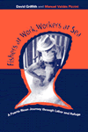

|
|
Accent
on Privilege
English Identities and Anglophilia in the U.S.
Jones, Katharine W.
What happens when immigration, privilege, and Anglophilia collide?
304 pp • 6x9 • Fall 2001
paper 1-56639-901-7
EAN 978-1-56639-901-2
cloth 1-56639-900-9
EAN 978-1-56639-900-5
|
|
|
Across
the Red Line
Stories from the Surgical Life
Karl, Richard C.
In the tradition of Lewis Thomas� The Lives of a Cell, a
beautiful book on what it�s like to be a surgeon
160 pp • 5.5x8.25 • Fall 2001
cloth 1-56639-912-2
EAN 978-1-56639-912-8
|
|
|
Air
Wars
The Fight to Reclaim Public Broadcasting
Starr, Jerold M.
An absorbing account of one of the most contentious battles for
community media control ever waged in the U.S.
New in Paperback!
352 pp • 6x9 • Fall 2001
paper 1-56639-913-0
EAN 978-1-56639-913-5
|
| 
|
The
Black Female Body
A Photographic History
Willis, Deborah, and Carla Williams
Recovering a photographic legacy
240 pp • 9x12 • Fall 2001
cloth 1-56639-928-9
EAN 978-1-56639-928-9
|
|
|
Cinema
16
Documents Toward a History of the Film Society
MacDonald, Scott
The history of Cinema 16—the nation�s first film society—through
letters, programs, interviews, and the society�s own documents
488 pp • 7x10 • Fall 2001
paper 1-56639-924-6
EAN 978-1-56639-924-1
cloth 1-56639-923-8
EAN 978-1-56639-923-4
|
|
|
Crossroads,
Directions, and a New Critical Race Theory
Valdes, Francisco, Jerome McCristal Culp, and Angela P. Harris
A powerful collection of original essays on the history of Critical
Race Theory
440 pp • 7x10 • Fall 2001
paper 1-56639-930-0
EAN 978-1-56639-930-2
cloth 1-56639-929-7
EAN 978-1-56639-929-6
|
|
|
Democratic
Theorizing from the Margins
Brettschneider, Marla
A clear account of the lessons and theories of democratic culture
272 pp • 6x9 • Fall 2001
cloth 1-56639-921-1
EAN 978-1-56639-921-0
|
|
|
Desis
in the House
Indian American Youth Culture in New York City
Maira, Sunaina Marr
Making the desi scene in New York
256 pp • 6x9 • Fall 2001
paper 1-56639-927-0
EAN 978-1-56639-927-2
cloth 1-56639-926-2
EAN 978-1-56639-926-5
|
| 
|
Fishers
at Work, Workers at Sea
A Puerto Rican Journey through Labor and Refuge
Griffith, David, and Manuel Vald�s Pizzini
The human dimension of globalized labor
280 pp • 6x9 • Fall 2001
paper 1-56639-911-4
EAN 978-1-56639-911-1
cloth 1-56639-910-6
EAN 978-1-56639-910-4
|
|
|
From
Identity to Politics
The Lesbian and Gay Movements in the United States
Rimmerman, Craig
A compelling critique of the gay and lesbian movements in the U.S.
and the limits of identity politics
256 pp • 6x9 • Fall 2001
paper 1-56639-905-X
EAN 978-1-56639-905-0
cloth 1-56639-904-1
EAN 978-1-56639-904-3
|
|
|
I
Wanna Be Me
Rock Music and the Politics of Identity
Gracyk, Theodore
From the Sex Pistols and Eminem to Bonnie Raitt and Ani DiFranco,
rockers contribute to our cultural capital
304 pp • 6x9 • Fall 2001
paper 1-56639-903-3
EAN 978-1-56639-903-6
cloth 1-56639-902-5
EAN 978-1-56639-902-9
|
|
|
In
Transit
The Transport Workers Union in New York City, 1933-1966
Freeman, Joshua B.
An award-winning history of the Transport Workers Union, and an
example of radical organizing in action
464 pp • 6x9 • Fall 2001
paper 1-56639-922-X
EAN 978-1-56639-922-7
|
|
|
The
Making of Asian America through Political Participation
Lien, Pei-te
A fascinating look at how race ethnicity and transnationalism help
construct a complex American electorate
312 pp • 6x9 • Fall 2001
paper 1-56639-895-9
EAN 978-1-56639-895-4
cloth 1-56639-894-0
EAN 978-1-56639-894-7
|
|
|
Migration,
Transnationalization, and Race in a Changing New York
Cordero-Guzm�n, H�ctor R., Robert C. Smith, and Ram�n Grosfoguel
An examination of the complex forces that shape the contemporary
immigration experience in New York City
320 pp • 7x10 • Fall 2001
paper 1-56639-888-6
EAN 978-1-56639-888-6
cloth 1-56639-887-8
EAN 978-1-56639-887-9
|
|
|
More
Than Black?
Multiracial Identity and the New Racial Order
Reginald, Daniel G.
Dismantling the edifice of white supremacy
280 pp • 7x10 • Fall 2001
paper 1-56639-909-2
EAN 978-1-56639-909-8
cloth 1-56639-908-4
EAN 978-1-56639-908-1
|
|
|
Moving
Up and Out
Poverty, Education, and the Single Parent Family
Holyfield, Lori
Focusing on single women with children in poverty and the obstacles
they encounter in trying to change their lives and class position
184 pp • 5.5x8.25 • Fall 2001
paper 1-56639-915-7
EAN 978-1-56639-915-9
cloth 1-56639-914-9
EAN 978-1-56639-914-2
|
|
|
The
Paradox of Natural Mothering
Bobel, Chris
An intimate view of the family next door
240 pp • 5.5x8.25 • Fall 2001
paper 1-56639-907-6
EAN 978-1-56639-907-4
cloth 1-56639-906-8
EAN 978-1-56639-906-7
|
|
|
Shifting
Borders
Rhetoric, Immigration, and California's Proposition 187
Ono, Kent A., and John M. Sloop
Learning the lessons of California Proposition 187
264 pp • 6x9 • Fall 2001
paper 1-56639-917-3
EAN 978-1-56639-917-3
cloth 1-56639-916-5
EAN 978-1-56639-916-6
|
|
|
The
Sign of the Burger
McDonald's and the Culture of Power
Kincheloe, Joe L.
A refreshingly sophisticated yet readable examination of the power
of American culture—and burgers
240 pp • 5.5x8.25 • Fall 2001
paper 1-56639-932-7
EAN 978-1-56639-932-6
cloth 1-56639-931-9
EAN 978-1-56639-931-9
|
|
|
Society
and Legal Change
Watson, Alan, and Paul Finkelman
A noted scholar tackles dysfunctional law
Second Edition
168 pp • 5.5x8.25 • Fall 2001
paper 1-56639-920-3
EAN 978-1-56639-920-3
cloth 1-56639-919-X
EAN 978-1-56639-919-7
|
|
|
We
Can't Eat Prestige
The Women Who Organized Harvard
Hoerr, John
The story of a 15-year fight to form a union of office and lab
workers at Harvard University
New in Paperback!
280 pp • 6x9 • Spring 1997
paper 1-56639-925-4
EAN 978-1-56639-925-8
|
|
|
The
Wild Animal Story
Lutts, Ralph H.
An anthology of some of the most celebrated animal stories ever
collected
New in Paperback!
328 pp • 6x9 • Spring 1998
paper 1-56639-918-1
EAN 978-1-56639-918-0
|